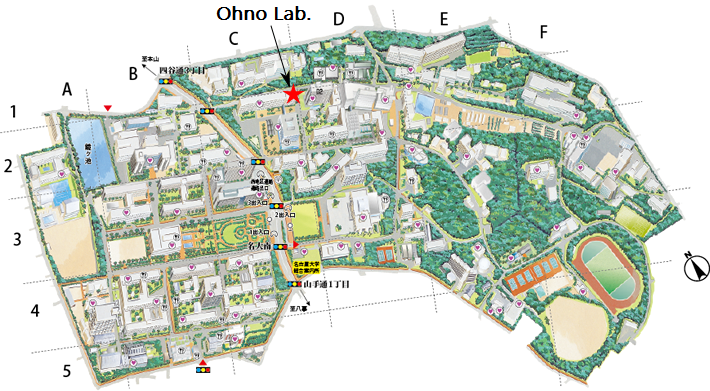

Access to our laboratory
To Higashiyama Campus

From Nagoya Station: Take the Subway Higashiyama Line to Motoyama Sta. (15 minutes), then transfer to the Subway Meijo Line to Nagoya Daigaku Sta. (Higashiyama Campus is just off the subway exit.).
From Centrair (Central Japan International Airport): Take the Meitetsu Line to Kanayama Sta. (30 min.), then transfer to the Subway Meijyo Line to Nagoya Daigaku Sta. (21 min.).
To Our Laboratory

Address:
Furo-cho, Chikusa-ku, Nagoya 464-8603, Japan
Room 256-262, School of Engineering Building #5
+81-52-789-4424